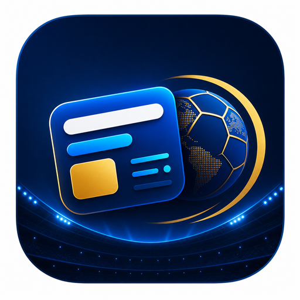

Widget
CDM 2026
Une application Android locale pour suivre son equipe favorite depuis l'ecran d'accueil, avec calendrier, compte a rebours, classement et rappels.
3 formats
Compact, normal et grand
Compact, normal et grand
48 equipes
Selection de l'equipe favorite
Selection de l'equipe favorite
Vie privee
Sans compte ni analytique
Sans compte ni analytique